Your first assignment is to get all of the inventory stacked up, and to check for anything that might be missing or broken.
Also, he would appreciate it if you would stop calling him "The Mad Scientist." Even though he totally is.
An error was corrected at 10:57PM on Friday TIMEMIT. In the first graphic, in the fifth column from the left, two of the two-row cells should be merged into a four-row cell.
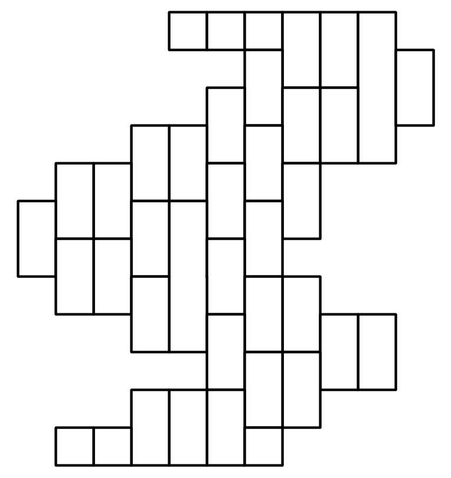 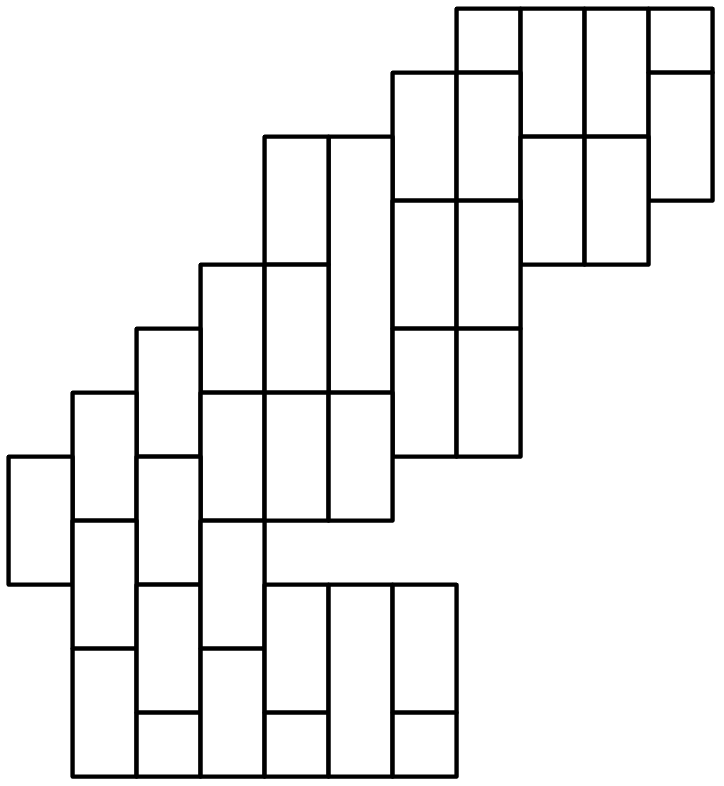 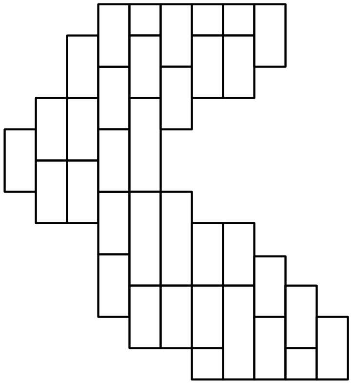 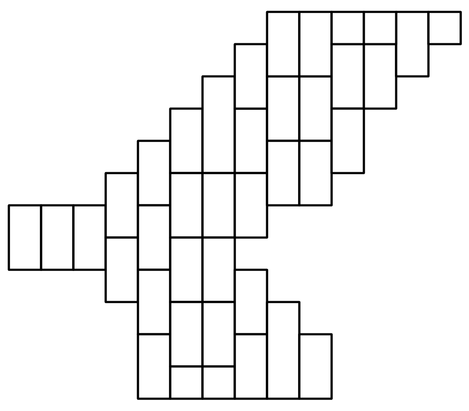 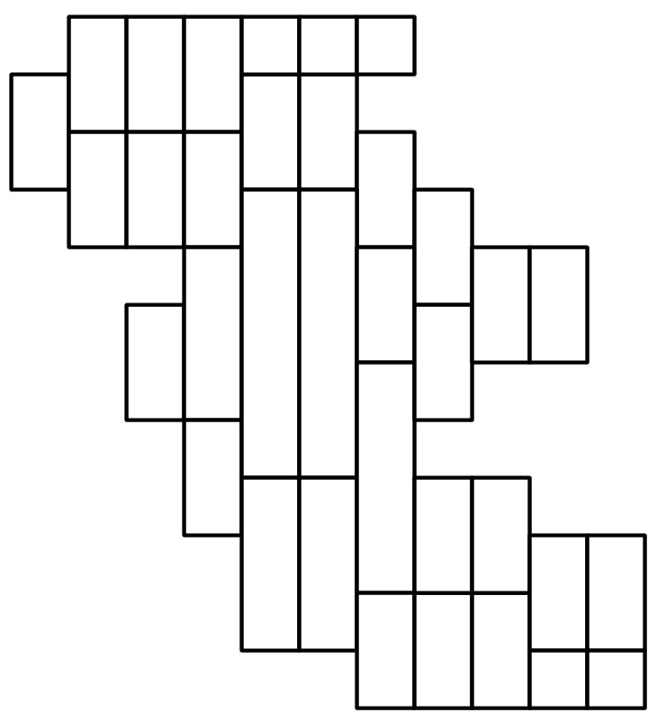 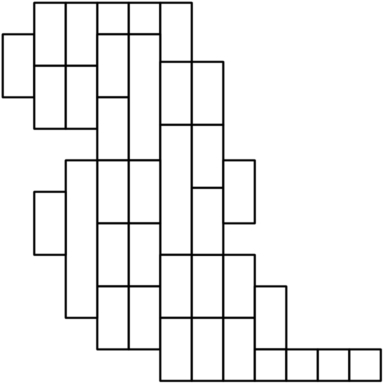 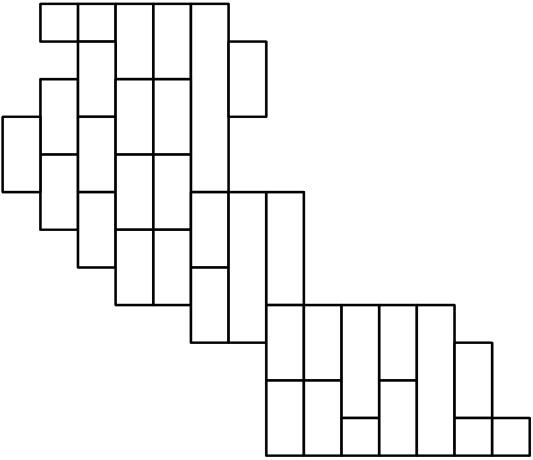 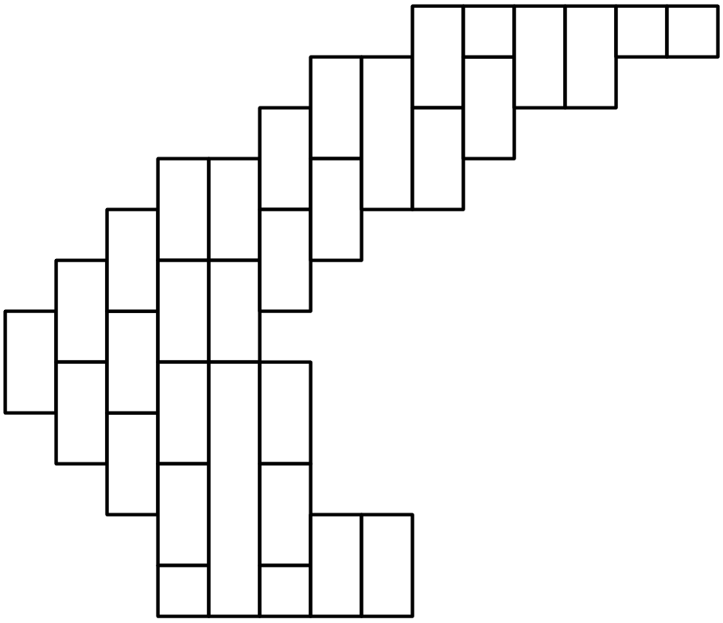 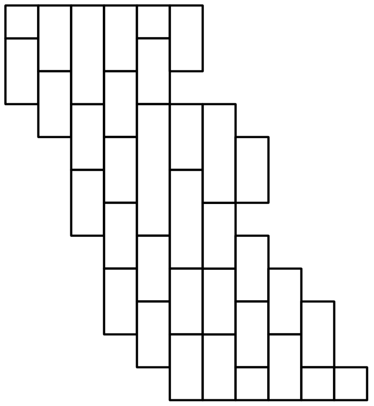 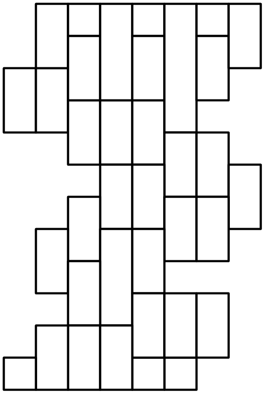 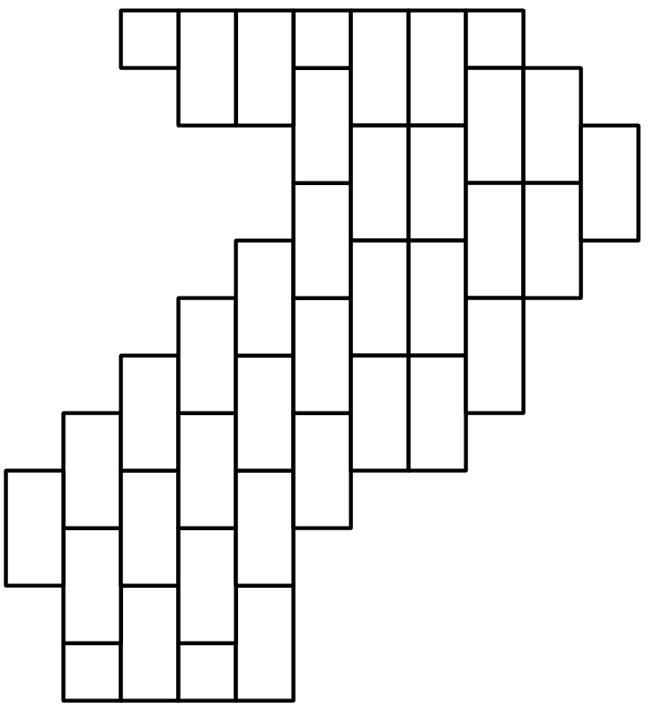